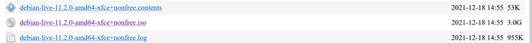
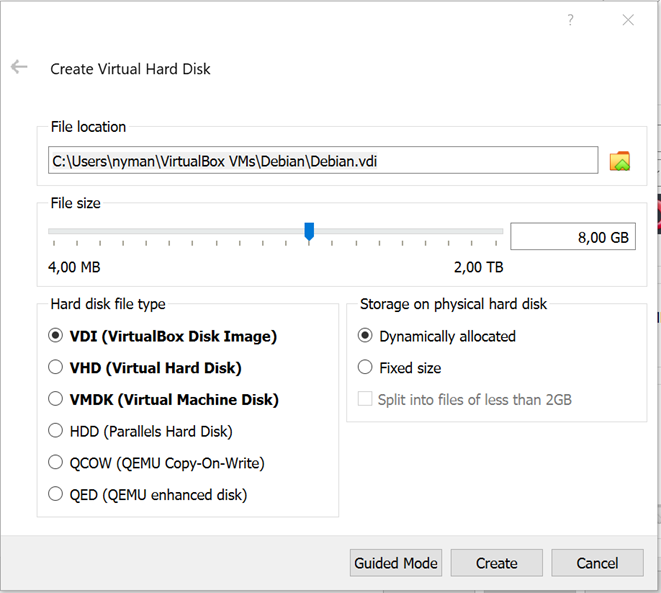
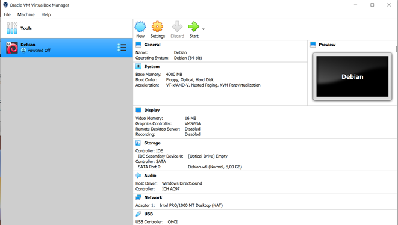
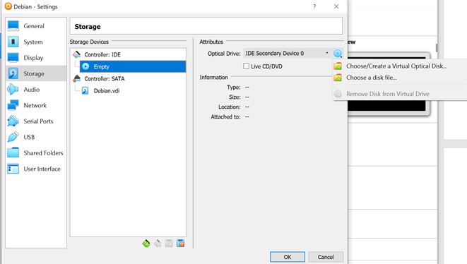
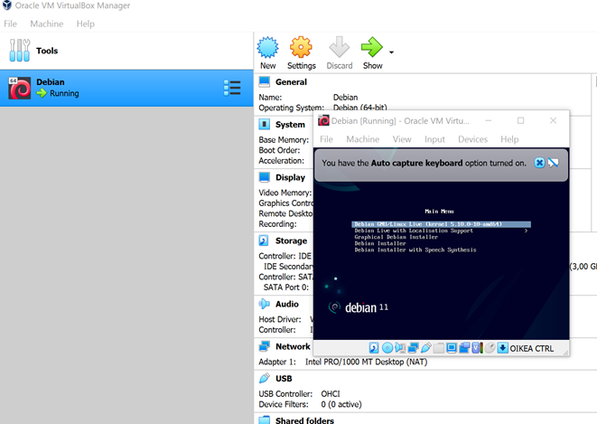
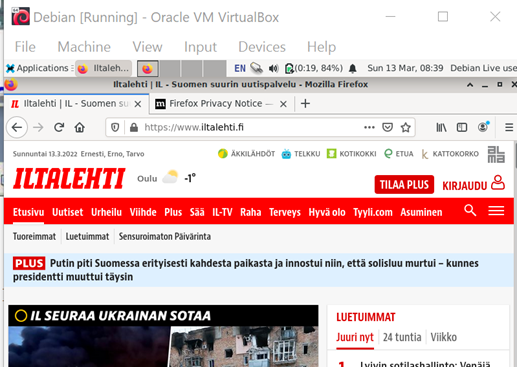

VirtualBoxin ja Debian käyttöjärjestelmän asennus
Esivalmistelu
Koneenani oli Dell XPS 13 7390 ja käyttöjärjestelmänä Windows 10. Latasin VirtualBoxin uusimman asennustiedoston (6.1.32 for Windows host) osoitteesta VirtualBox
Käynnistin asennustiedoston ja klikkailin Next -painiketta. Custom setup kohdassa jätin täpätyksi Create shortcut ja Register file associations kohdat. Tämän jälkeen klikkailin Next -painiketta kunnes pääsin painamaan Install. VirtualBoxin asennustiedoston lataukseen ja asennukseen kului noin 2 minuuttia.
Seuraavaksi latasin Debianin ISO tiedoston osoitteesta Debian .ISO
Tiedoston lataus kesti noin 20 minuuttia 100M netillä. Todellinen nopeus näytti olevan speedtest.net mukaan vain viidennes luvatusta.
Virtuaaliaseman luonti
Tämän jälkeen klikkasin Create -nappia.
Seuraavassa kohdassa jätin oletusasutekuset:
Ja klikkasin vielä kerran Create. Virtuaaliaseman luonti onnistui:
ISO tiedoston lisääminen virtuaaliasemaan
Klikkasin hiiren oikealla näppäimellä luomaani virtuaaliasemaa ja valitsin Settings. Navigoin itseni Storage valikkoon. Seuraavaksi klikkasin seuraavasti:
Storage Devices alta Controller IDE – Empty, jonka jälkeen ikkunana oikean laidan Attributes alta Optical Drive perästä levykuvaa (IDE Secondary device (tämä oli oletuksena)), jonka alta aukesi valikko. Klikkasin Choose/Create a Virtual Optical Disk:
Seuraavaksi lisäsin lataamani ISO tiedoston virtuaalikoneeseen.
Klikkasin OK.
Debianin asennus
Tupla klikkasin luomaani virtuaaliasemaa jonka sisällä oli lataamani ISO tiedosto. Tästä aukesi ”Main Menu” ikkuna:
Valitsin oletusvaihtoehdon painamalla Enter näpppäintä. Main Menu valikko muuttui mustaksi vajaan minuutin ajaksi jonka jälkeen jonka jälkeen aukesi Debianin työpöytä. Testasin vielä, että pääsen terminaaliin ja että minkä kielinen näppämistö oli oletuksena. Katsoin myös pääsenkö virtuaalikoneelta nettiin käynnistämällä selaimen ja lukaisemalla uutiset
Yhteenveto
Asensin VirtualBoxin ja Debian käyttöjärjestelmän onnistuneesti Windows koneelleni. Asennus sujui suoraviivaisesti eikä ongelmia tullut vastaan. Tukena asennuksessa käytin Tero Karvinen - Install Debian on VirtualBox -ohjeita.
PÄIVITYS 16.3.20222 08:55. Eli tehtävässä ei asennettu Debian käyttöjärjestelmää, vaan luotiin virtuaaliasema jonne laitettiin virtuaalilevyke joka sitten käynnistettin.